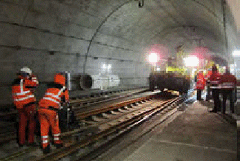
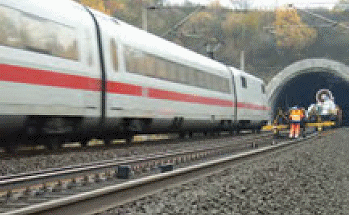
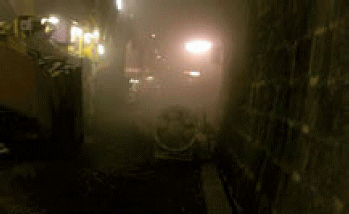
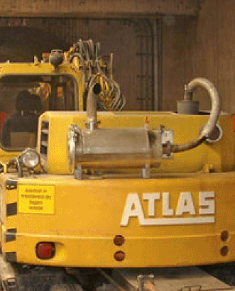
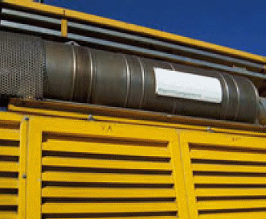

Für Arbeiten im Tunnel soll das Arbeitsgleis im Regelfall gesperrt sein. Voraussetzung für Arbeiten in einem nicht gesperrten Arbeitsgleis ist das Vorhandensein von Tunnelnischen. Diese Nischen, die nach der Warnung aufgesucht werden, müssen deutlich erkennbar sein, z. B. durch Beleuchtung. Die Räumzeit muss den Weg zum Erreichen der Nischen berücksichtigen. Sogenannte Sicherheitsräume in Tunneln neuerer Bauart ersetzen die Nischen nicht. Deshalb muss in Tunneln ohne Nischen, auch wenn ein sogenannter Sicherheitsraum vorhanden ist, das Arbeitsgleis stets gesperrt sein. Dies gilt z. B. auch für S-Bahn Tunnel ohne Nischen oder für Tunnel auf den Schnellfahrstrecken.
In solchen Tunneln ohne Nischen, die mit Geschwindigkeiten über 200 km/h befahren werden dürfen, ist die Geschwindigkeit im Nachbargleis auf höchstens 160 km/h zu reduzieren. Die Beschäftigten müssen bei einer Fahrt im Nachbargleis an die Tunnelwand des gesperrten Arbeitsgleises treten. Wenn die Geschwindigkeit im Nachbargleis höchstens 120 km/h beträgt, können sie bei einer Fahrt im Nachbargleis zwischen den Schienen des gesperrten Arbeitsgleises verbleiben.
Wenn die Beschäftigten gegen die Einflüsse des Fahrtwindes geschützt sind, z. B. bei der Tätigkeit in Fahrzeugen (Abb. 9-8), darf auf die Geschwindigkeitsreduzierung im Nachbargleis verzichtet werden.
Warnsignalgeber sollen im Tunnel so aufgestellt werden, dass sie den Signalschall parallel zur Tunnelwand abstrahlen.
Die Sicherheitsmaßnahmen richten sich nach Kap. 4. Werden Arbeiten z. B. an der Tunnelschale auf hochliegenden Standorten durchgeführt (z. B. Hubarbeitsbühnen), muss die Oberleitung ausgeschaltet und bahngeerdet werden. Gefahr kann auch durch die Fahrleitung des Nachbargleises bestehen, z. B. bei Spritzbetonarbeiten zur Sanierung der Tunnelschale. Eine Schutzwand zwischen Arbeitsbereich und Nachbargleis kann diese Gefahr beseitigen. Dabei sind evtl. in der Tunnelmittelachse vorhandene Stützpunkte der Oberleitung des Nachbargleises mit unter Spannung stehenden Teilen zu beachten.
Bei Gleisbauarbeiten im Tunnel werden i. A. Gefahrstoffe freigesetzt, z. B. Stäube bei Bewegung des Schotters (Abb. 11-2) und Dieselmotoremissionen (DME) durch den Maschineneinsatz. DME sind als krebserzeugende Gefahrstoffe gemäß Gefahrstoffverordnung [5] eingestuft. Für Tätigkeiten mit Gefahrstoffen geben Technische Regeln für Gefahrstoffe (TRGS) den Stand der Technik, Arbeitsmedizin und Arbeitshygiene sowie sonstige wissenschaftliche Erkenntnisse wieder. Eisenbahntunnel sind im Sinne der TRGS 554 [10] als ganz oder teilweise geschlossene Arbeitsbereiche einzustufen. Für Bauarbeiten unter Tage gilt Abschnitt VII der UVV Bauarbeiten [12].
Werden in geschlossenen Räumen Verbrennungskraftmaschinen eingesetzt oder Arbeitsverfahren angewendet, bei denen Gefahrstoffe in die Atemluft freigesetzt werden, muss künstlich belüftet werden [12]. Bei Gleisbauarbeiten im Tunnel ist daher eine technische Lüftung generell erforderlich, die folgende Anforderungen erfüllen sollte [10]:
Bei Arbeiten im Eisenbahntunnel wird die technische Belüftung i. d. R. als gesonderte Position ausgeschrieben. Für Gleisbauarbeiten haben sich Lüfter bewährt, die mit dem Arbeitsfortschritt mitgeführt oder über die Tunnellänge verteilt auf dem Randweg platziert werden (Abb. 11-1). In den Arbeitsbereichen sind Messungen zur Überwachung der Atemluft erforderlich (O2, CO, CO2, NO, NO2). Hier haben sich personengetragene Messgeräte mit Alarmierung bewährt. Bei Staubfreisetzung muss Atemschutz getragen werden (mindestens P2-Filter).


| Abb. 11-1: | Schienenwechsel im Tunnel bei ortsfest aufgestellter (oben) und mobil mitgeführter (rechts) technischer Lüftung. |

| Abb. 11-2: | Technische Lüftung bei Bettungsreinigungsarbeiten im Tunnel. |
Abgase von Dieselmotoren bestehen aus partikelförmigen Anteilen, den sogenannten Dieselmotoremissionen (DME) und aus gasförmigen Anteilen (O2, CO, CO2, NO, NO2 ). Der von dem gesamten Abgasgemisch für den Menschen als krebserzeugend eingestufte Anteil ist der partikelförmige Anteil, also die DME als Feinstaub aus elementarem Kohlenstoff.
Das Arbeitsverfahren ist so zu gestalten, dass Dieselmotoremissionen nicht frei werden, soweit dies nach dem Stand der Technik möglich ist (Minimierungsgebot nach Gefahrstoffverordnung [5] und TRGS 554 [10]). Da – abgesehen von Handmaschinen – zum Dieselmotor alternative Antriebstechniken (z. B. Elektroantrieb) für Gleisbaumaschinen zur Zeit nicht zur Verfügung stehen bzw. wegen der erforderlichen Maschinenbeweglichkeit ungeeignet sind, müssen Maßnahmen zur Minderung der Dieselmotoremissionen getroffen werden. Hierzu gehören z. B. der Einsatz von Partikelfiltern, schadstoffarmen Dieselmotoren und weitgehend schwefelfreien Kraftstoffen und eine regelmäßige Wartung. Die Anforderungen an Rußpartikelfiltersysteme, Kraftstoffe sowie Konzepte für Motorenwartung, Abgasuntersuchungen, Dokumentation und emissionsarme Betriebsweisen sind in TRGS 554 [10] festgelegt.
Rußpartikelfilter sind für zahlreiche Gleisbaumaschinen und Eisenbahnfahrzeuge Stand der Technik (z. B. für Zweiwegebagger, Gleisarbeitsfahrzeuge, Arbeitszuglokomotiven, Fahrleitungsmontagefahrzeuge, Zweiwege-Schweißmaschinen, Stopfmaschinen, …), vgl. Abb. 11-3 und 11-4. Gleisbauunternehmen lassen Neumaschinen, die auch in Tunneln eingesetzt werden sollen, zunehmend mit Rußpartikelfilter ausrüsten.
Nach TRGS 554 [10] geeignete Rußpartikelfilter gewährleisten eine Abscheiderate > 90 % der überwiegend aus Ruß bestehenden Feststoffanteile. Rußpartikelfilter müssen Qualitätsanforderungen erfüllen [43].
Wegen der Belastung der Tunnelatmosphäre durch Abgase und wegen der Brandlast sollten benzingetriebene Handmaschinen für Oberbauarbeiten (z. B. Schraubmaschinen, Stopfhämmer) im Tunnel z. B. durch Anbaugeräte am Zweiwegebagger (Bagger mit Rußpartikelfilter) oder soweit verfügbar durch elektrisch angetriebene Maschinen oder dieselgetriebene Handmaschinen ersetzt werden.

| Abb. 11-3: | Zweiwegebagger im Tunnel mit Rußpartikelfilter. |

| Abb. 11-4: | Rußpartikelfilter auf einer Stopfmaschine. |